{kind=link}
What?
Creating live animations with my modified stroboscope.
| 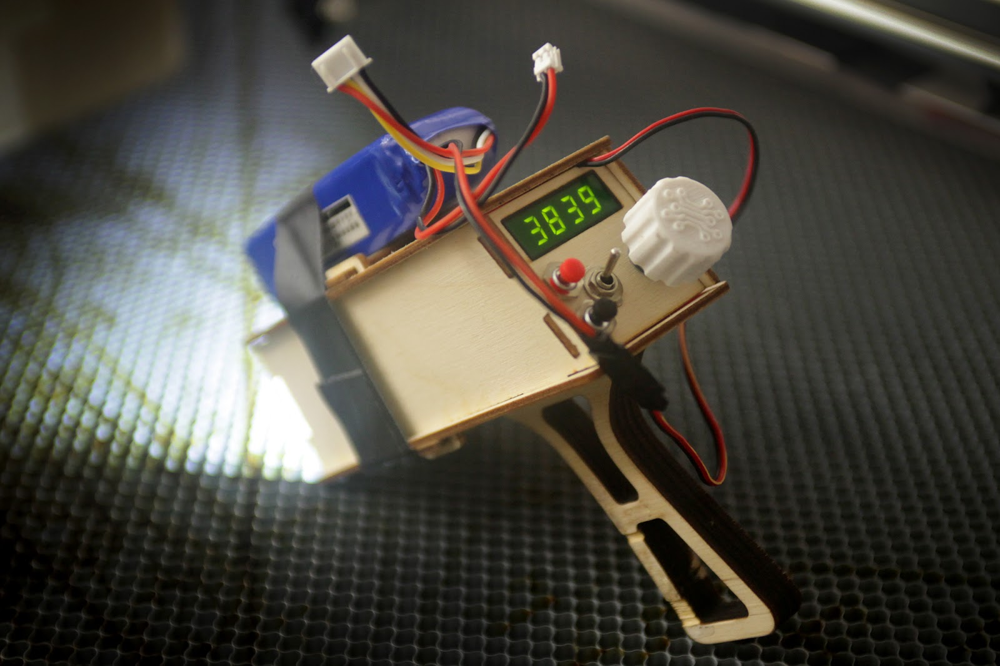 |
| Strobomatic 2 |
{kind=link}
Stroboscopes 'freeze' fast spinning objects by flashing bright light at the exact same place every rotation. Slight changes in speed cause desynchronization, requiring constant frequency adjustments from the user.
Animations can be created by strobing a fast spinning object at exactly the right time so consecutive animation poses appear one after the other.
Manually adjusting the strobe frequency will make this project difficult, so I hacked a cheap laser tachometer to control the strobe synchronization.
| 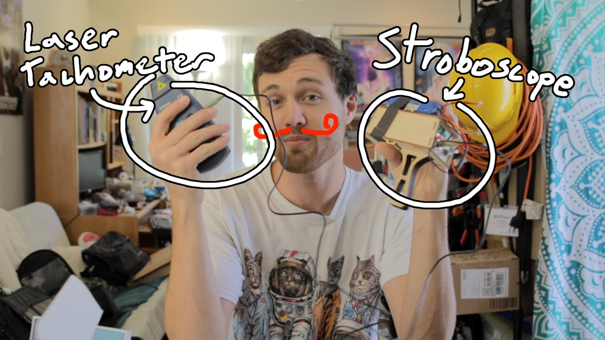 |
| sweet moustache |
{kind=link}
Why?
Peter Brown and I visited Autodesk's Pier 9 machine shop and saw this awesome Fibonacci zoetrope by John Edmark. Somebody noted that artichoke leaves grow in an identical pattern.
Peter has a lathe, I have a stroboscope, and grocery stores have artichokes.
Peter has a lathe, I have a stroboscope, and grocery stores have artichokes.
{kind=link}
Videos
My Video:
Peter's video:
First I probed around the tachometer PCB while measuring the speed of a drill.
The laser tachometer works by detecting a reflective sticker on your target. The internal photodetector circuit generates a pulse every time the sticker passes across the beam. Knowing the time between pulses the tachometer can determine RPM. However, we don't need any RPM measurements, just filtered output from the photodetector.
| 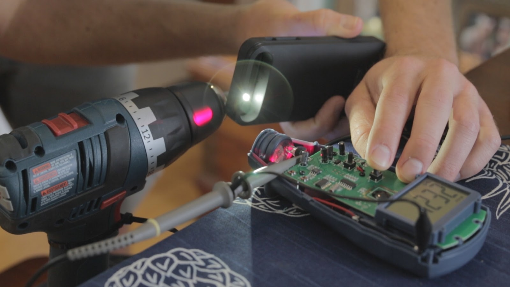 |
| Probing tachometer PCB |
{kind=link}
| 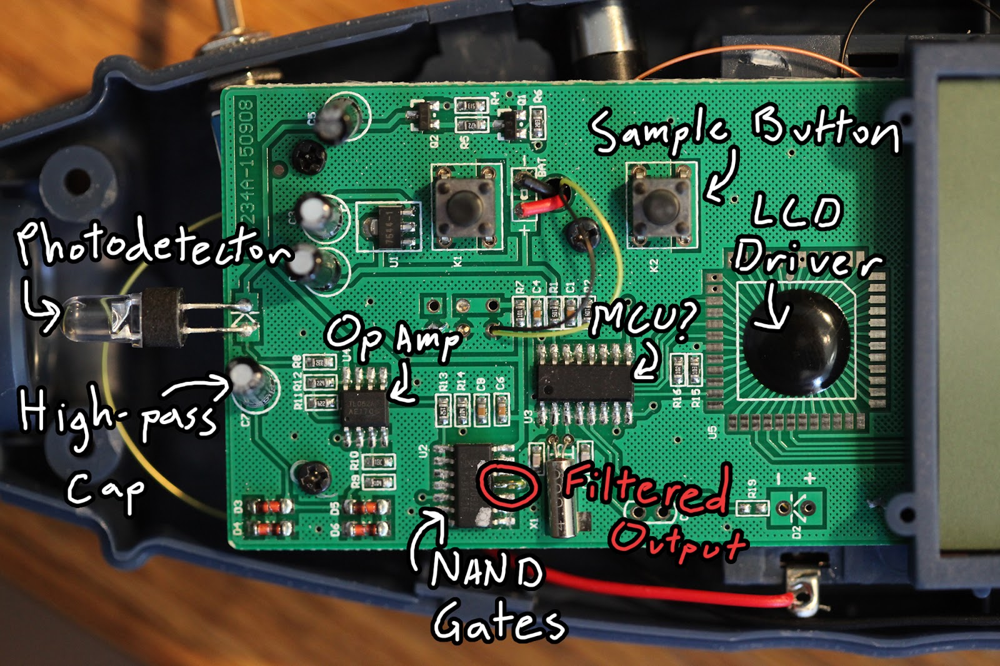 |
| Circuit components |
{kind=link}
| 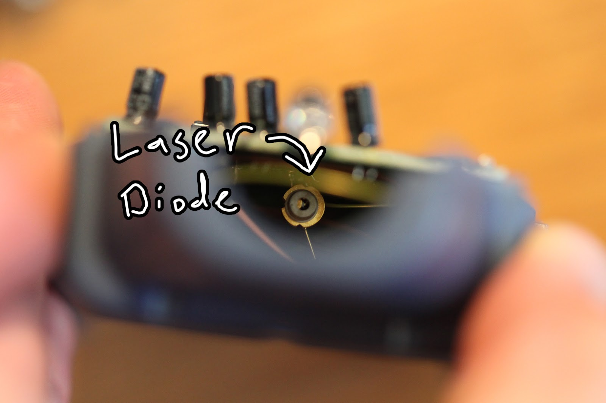 |
| Laser diode under the PCB |
{kind=link}
This is what the raw photodetector signal looks like:
| 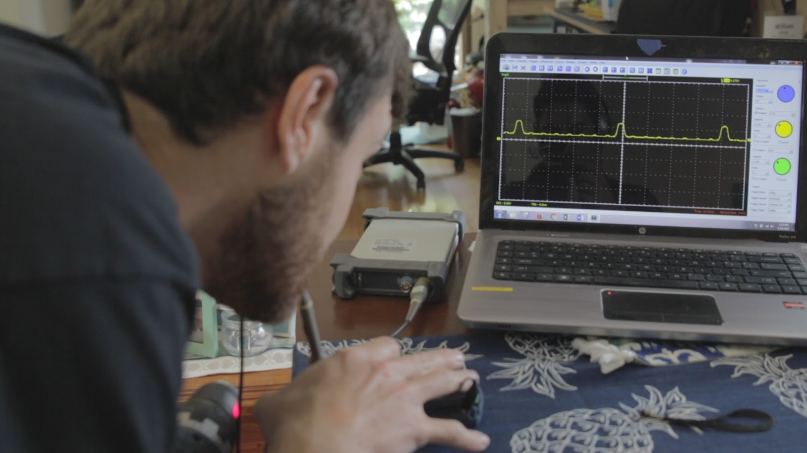 |
| Unfiltered photodetector |
{kind=link}
This what the filtered output looks like:
| 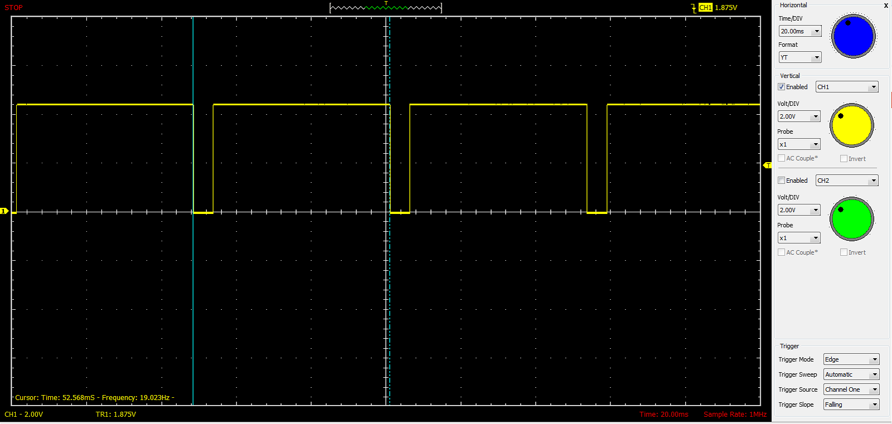 |
| Filtered photodetector |
{kind=link}
| 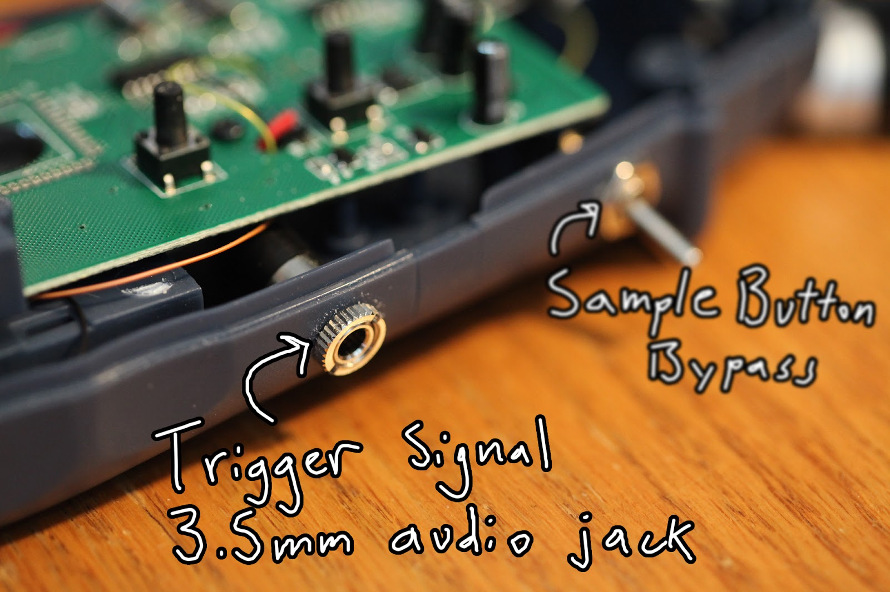 |
| Signal out |
{kind=link}
| 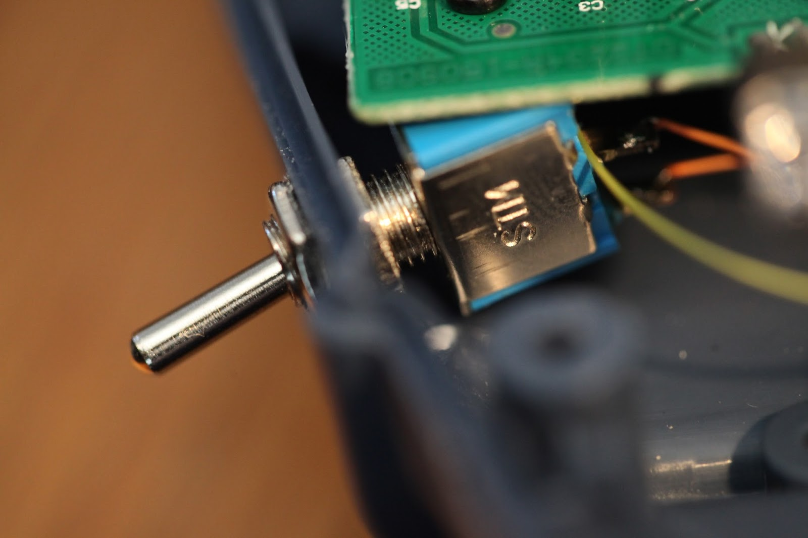 |
| Toggle switch |
{kind=link}
The tachometer generates a signal only once per rotation, but we need multiple strobe flashes per rotation to make animations. To do this, the Arduino records the time between full rotations and sets a timer to flash the strobe an even number of times between.
And then I realized identical patterns each rotation was literally the exact opposite of an artichoke's leaf growth.
I don't entirely understand it, but 137.5 degrees is an irrational angle related to the fibonacci sequence. Lots of plants naturally grow leaves at this angle for optimum sun exposure. It might help to think about a non-optimized angle like every 180 degrees. The plant would have two sides of leaves with the top leaves stealing all the sunlight.
{kind=link}
| 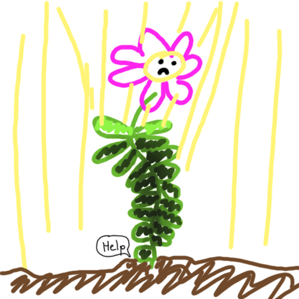 |
| Artist's rendition |
{kind=link}
Good news is this firmware allows for zoetrope animations as well.
Quick note: the strobe flash trigger false positives in the tachometer, so the firmware has to ignore pulses of similar length.
Results
Note: the following animations can be viewed in real life, this is not stop motion. Actually the animations look better in real life... Rolling shutter on most cameras causes this ugly banding across the image.
We put the reflective sticker on the back of the lathe.
This is a strobe flash every 137.5 degrees. Each consecutive leaf appears where the previous leaf was, creating this crawling animation.
We put the reflective sticker on the back of the lathe.
| 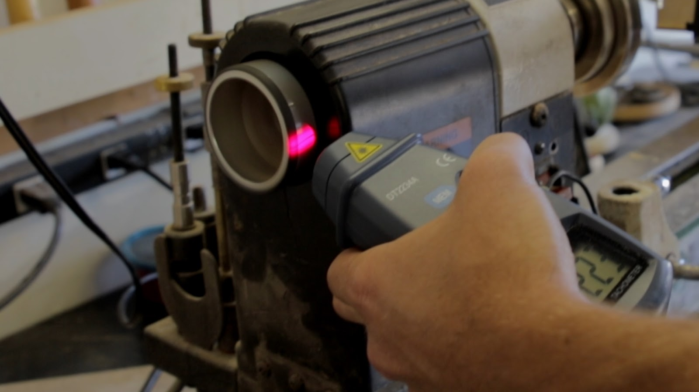 |
| Lathe sticker |
{kind=link}
| artichoke |
 |
| saw blade |
The a above examples were filmed for Peter's video. For my video we made hand drawn, 10 frame, zoetrope animations and spun them on a drill.
| 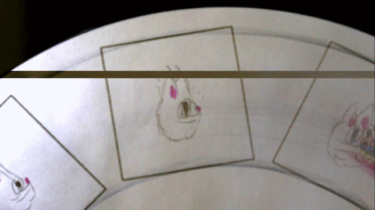 |
| My animation |
{kind=link}
| 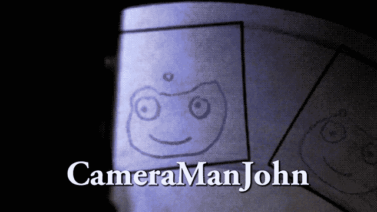 |
| CameraManJohn's animation |
{kind=link}
| 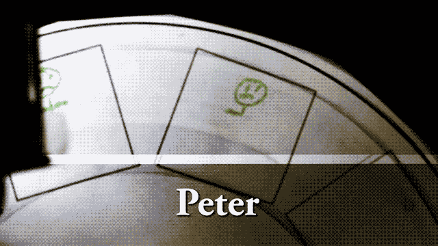 |
| Peter's animation |
{kind=link}
If anybody wants draw their own animation, the disk template is in the download link above. If you send it to the PO box on my contact page I'll strobe/film it.
Conclusion
This project was a really fun collaboration with Peter Brown!
I'm thinking of making a portable zoetrope so people can make and play their own hand drawn animations in only a few minutes.
My only gripe is that rolling shutter on modern cameras causes the nasty banding seen above. That's not something you see in real life, and it's caused by capturing pixels over time instead of all at once. There's not much to do about it other than buying a camera with global shutter.
The End
Byeeeeeeeeeeeeeeee
Jackalope Animations was inspired by my terrible rainbow cat barfing animation.
Jackalope Animations was inspired by my terrible rainbow cat barfing animation.
your cool
ReplyDeletecook eggs with the laser
ReplyDelete